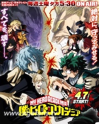

我的英雄学院 第三季
拥有名为“个性”的超常能力的人类的存在变得理所当然的世界。与No.1英雄·欧尔麦特相遇了的“无个性”少年·绿谷出久，小出他的隐藏的英雄资质被发现，并继承了欧尔麦特的“个性”——ONE FOR ALL。而后小出成功地进入了英雄辈出的名门校·雄英高校，与同学们过着互相比试切磋琢磨的每一天。
雄英高校的学生们激烈比试的大活动「雄英体育祭」、在职业英雄手下磨练技艺的「职场体验」、与“英雄杀手”斯坦因的死斗、期末考试中与欧尔麦特的战斗，然后是与敌联合的死柄木吊的邂逅…。在一个个试炼面前，目标着成为职业英雄而果敢的站了出来的出久。另一方，死柄木与欧尔麦特的宿敌·ALL FOR ONE的同伴也增加了，并伺机蠢蠢欲动。为了成为最棒的英雄的出久的步伐、以及与敌人们的战斗，日渐加速！